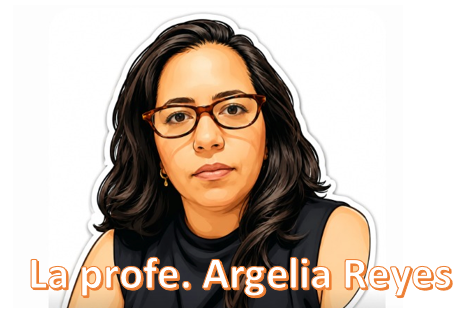
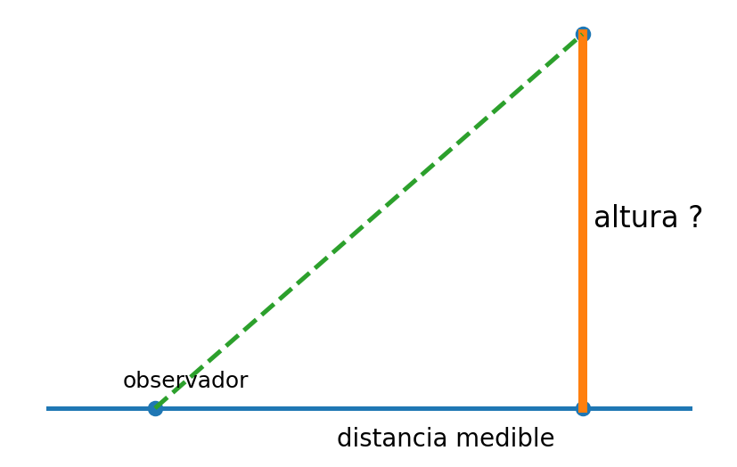

Ruta de pensamiento
1 · Observo la situación2 · Represento geométricamente3 · Identifico qué puedo conocer
Del entorno al modelo
Toca o señala mentalmente qué elementos de la situación deben convertirse en puntos, segmentos o ángulos.
ExploroConstruyoAnalizoModelo
Ficha 2.2 · Medir sin llegar hasta allí
PROGRESIÓN 2
Medir sin llegar hasta allí
Distingue medición directa e indirecta y convierte una situación real en una representación geométrica.
Pregunta guía: ¿Podemos conocer una distancia sin medirla directamente?

LA PROFE ARGELIA TE RECUERDA:
Antes de buscar una fórmula, identifica qué observas, qué conoces y qué necesitas descubrir.
Antes de buscar una fórmula, identifica qué observas, qué conoces y qué necesitas descubrir.
RECURSO VISUAL

¿Qué sí puedo medir?
Quieres conocer la altura de un poste sin subir a él. Desde el suelo, ¿qué dato sería razonable medir directamente?
Del mundo al modelo
OBSERVOREPRESENTOIDENTIFICORELACIONO
Describe un croquis para representar el poste, el suelo y una línea de visión.
Información relevante
Datos: distancia 12 m, ángulo 35°, temperatura 24 °C, altura de ojos 1.60 m, color blanco.
Escribe cuáles usarías para un modelo trigonométrico.
Cierre de la ficha
Vuelve a la pregunta guía: ¿Podemos conocer una distancia sin medirla directamente?
Conexión: Tu respuesta queda como evidencia abierta. Se registra como evidencia abierta al avanzar a la siguiente pantalla.